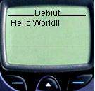

Wiêkszo¶æ znaczników WML zosta³a zaczerpniêta z jêzyka XML. Obeznani w HTML`u nie powinni mieæ problemów z przyswojeniem wml`a, choæ zaznaczam, ¿e pisz±c ten kurs my¶la³em tak¿e o osobach s³abo orientuj±cych siê w tym jêzyku. WML jest o wiele ubo¿szy ni¿ HTML, wprowadzono tak¿e kilka znacz±cych zmian, jak konieczno¶æ zamykania wszystkich znaczników, czy inna budowa znaczników pustych. Nowo¶ci± s± tak¿e "zadania" i "zdarzenia", które na pierwszy rzut oka mog± siê wydaæ trudne, jednak w dalszej czê¶ci kursu postaram siê udowodniæ, ¿e tak nie jest. Pe³n± specyfikacjê jêzyka WML w formacie pdf mo¿ecie zassaæ z FTP Netmagii, lub bezpo¶rednio ze strony WAP Forum; www.wapforum.org
Sk³adnia WML
Dla pocz±tkuj±cych webmasterów na pierwszy rzut oka ten artyku³ mo¿e siê wydaæ skomplikowany, jednak gwarantujê, ¿e przy pierwszym przyk³adzie wszystko siê rozja¶ni. Wiem, ¿e w niektórych kursach wml autorzy rozpoczynaj± od przyk³adu, jednak ja postanowi³em siê wy³amaæ :-)
Znaczniki lub tagi s± ci±giem znaków objêtymi ostrymi nawiasami. W jêzyku WML jest ich 34. Wyró¿niamy znaczniki obejmuj±ce jak±¶ tre¶æ;
<tag>zawarto¶æ</tag>
lub znaczniki puste;
<tag/>
Je¿eli znacznik posiada jaki¶ dodatkowy atrybut, to piszemy jego nazwê ma³± liter±, a warto¶æ obejmujemy cudzys³owem- to ostatnie jest zalecane w HTML`u, w WML warto¶ci MUSIMY zamkn±æ w cudzys³ów, np.:
<tag atrybut="warto¶æ"> zawarto¶æ </tag>
lub:
<tag atrybut="warto¶æ"/>
W kodzie ¼ród³owym mo¿emy umie¶ciæ jak±¶ tre¶æ, co do której nie chcemy aby by³a interpretowana przez przegl±darkê, np. wy¶wietlana na ekraniku telefonu. W tym celu stosujemy komentarze, które maj± nastêpuj±c± sk³adniê;
<!-- komentarz -->
Na pocz±tku ka¿dego dokumentu wml ( talii ), musimy umie¶ciæ prolog, który jest deklaracj± XML i deklaracj± typu dokumentu. Prolog wygl±da nastêpuj±co;
<?xml version="1.0"?>
!DOCTYPE wml PUBLIC "-//WAPFORUM//DTD WML 1.2//EN"
"http://www.wapforum.org/DTD/wml_1.1.xml">
Pod prologiem znajduje siê podstawowy znacznik wml, otwieraj±cy dokument;
<wml> </wml>
Zaraz za znacznikiem <wml> umieszczamy element;
<head> </head>
W tej czê¶ci mog± siê znale¼æ (choæ mo¿na go pozostawiæ pustego) podstawowe informacje o dokumencie, mo¿emy w nim umie¶ciæ dwa elementy META i ACCESS. Sam znacznik head nie posiada bowiem w³asnych atrybutów. Pierwszy z nich podaje dodatkowe informacje dotycz±ce dokumentu i posiada kilka atrybutów; name, http-equiv, forua, content, i scheme.
Najwa¿szejsze z nich zdaj± siê byæ http-equiv i content.
<meta http-equiv="content-type" content="text/vnd.wap.wml" />
Element ten umo¿liwia wy¶wietlanie dokumentu, pomimo i¿ jest on umieszczony na serwerze "nie obs³uguj±cym" WAP`a. Definiuje on bowiem typ nag³ówka HTTP.
<meta content="charset" user-agent="character-set=rodzaj_kodowania" />
Dziêki temu atrybutowi mo¿emy okre¶liæ inny standard kodowania ni¿ domy¶lny, czyli Unicode.
Znacznik ACCESS, jak sama nazwa wskazuje pozwala na ograniczenie dostêpu do danego zestawu kart. Posiada on dwa atrybuty; domain oraz path.
<access domain="netmagia.pl" path="/webmaster">
Powy¿sza definicja powoduje, ¿e na nasz dokument bêdzie mo¿na wej¶æ tylko przechodz±c z kart umieszczonych na serwerze Netmagii i umieszczonych w katalogu webmaster. To by by³o chyba wszystko a propos elementu HEAD dokumentu. Dodam tylko, dla tych którzy jeszcze nie wiedz±, ¿e ten fragment nie jest pokazywane na ekranie przez przegl±darkê.
Nastêpnym znacznikiem wewn±trz <wml> </wml> jest <template> </template> czyli szablon. S³u¿y on do definiowania funkcji klawiszy nawigacyjnych telefonu dla wszystkich kart w danej talii, jednak omówiê go dok³adniej w dalszej czê¶ci przy okazji omawiania nawigacji.
<card id="first"> </card>
Po czê¶ci template, wreszcie przechodzimy do opisu kart w talii. Jak ju¿ wspomina³em w jednej talii (dokumencie wml), mo¿e siê znajdowaæ jedna, lub ca³a kolekcja kart. Jedn± kartê otaczaj± znaczniki <card> i </card> przy czym je¿eli w dokumencie s± przynajmniej dwie karty, to obowi±zkowym atrybutem tego znacznika jest id, np.:
<card id="pierwsza">
<!-- tre¶æ pierwszej karty -->
</card>
<card id="druga">
<!-- tre¶æ drugiej karty -->
</card>
ID to nic innego jak unikatowy identyfikator ka¿dej karty. Identyfikator tak¿e u³atwia nawigacjê w zasiêgu jednej talii.
Innym przydatnym atrybutem, choæ nie oligatoryjnym znacznika card, jest title;
<card title="Tytul">
</card>
Title to oczywi¶cie tytu³ strony. W HTML`u stosujemy znacznik <TITLE> </TITLE> o bardzo podobnej funkcji. Jest on po prostu w jaki¶ sposub wyró¿niany w przegl±darce. W HTML`owej przegl±darce najczê¶ciej jest on pokazywany na pasku tytu³owym przegl±darki. W telefonie komórkowym tytu³ pojawia siê na górze ekraniku. Pewnie zauwa¿y³e¶, ¿e doszli¶my wreszcie do pierwszego elementu, który jest wy¶wietlany w przegl±darce.
Przyk³ad
W koñcu doszli¶my do obiecanego przyk³adu. Proponujê uruchomiæ Nokia WAP Toolkit. Nastêpnie z menu "File" wybierz "New"- "WML Deck..." Powinien siê pojawiæ nowy dokument wml ze standartowymi znacznikami programu. Mo¿esz albo wymazaæ wszystko i wpisaæ kod zamieszczony na dole, albo poprawiæ kod do tego poni¿ej. Proponujê to pierwsze rozwi±zanie, gdy¿ wtedy, podczas przepisywania kodu utrwal± Ci siê wszystkie znaczniki.
<?xml version="1.0"?>
<!DOCTYPE wml PUBLIC "-//WAPFORUM//DTD WML 1.1//EN"
"http://www.wapforum.org/DTD/wml_1.1.xml">
<wml>
<card title="Debiut">
<p><!-- Tutaj rozpoczyna sie tresc karty -->
Hello World!!!
</p>
</card>
</wml>
|
 |
Po wpisaniu kodu przyci¶nij przycisk "Compile"- zapisz stronê do pliku gdzie¶ na dysku, a nastêpnie naci¶nij przycisk "Show" aby zobaczyæ efekt Twojej pracy w emulatorze Noki. Je¿eli pojawiaj± Ci siê jakie¶ komunikaty o b³êdach, jeszcze raz sprawd¼ ca³y kod z tym powy¿ej i po poprawkach wszystko powinno byæ w porz±dku.
Pewnie zauwa¿y³e¶, ¿e pojawi³ siê nowy znacznik, o którym jeszcze nie pisa³em; <p> </p>
Jest to znacznik okre¶laj±cy pocz±tek i koniec akapitu, ale o tym ju¿ w nastêpnej czê¶ci dotycz±cej formatowania tekstu...